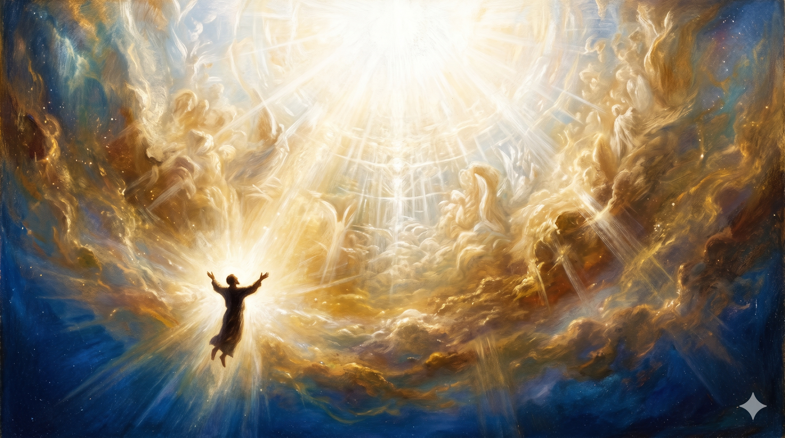

극심한 고통 가운데 무릎 꿇은 바울 — 세 번 간구해도 떠나지 않는 가시, 그러나 "내 은혜가 네게 족하도다"라는 음성이 울려 퍼지는 순간
"여러 계시를 받은 것이 지극히 크므로 너무 자만하지 않게 하시려고 내 육체에 가시 곧 사탄의 사자를 주셨으니 이는 나를 쳐서 너무 자만하지 않게 하려 하심이라 이것이 내게서 떠나가게 하기 위하여 내가 세 번 주께 간구하였더니 나에게 이르시기를 내 은혜가 네게 족하도다 이는 내 능력이 약한 데서 온전하여짐이라 하신지라" — 고린도후서 12:7–9
바울은 자신이 십사 년 전에 셋째 하늘, 곧 낙원에 이끌려 올라가 사람이 말할 수 없는 말을 들었다고 고백합니다. 이것은 극히 드문 신비 체험이었습니다. 그런데 바울은 이 체험을 자랑하지 않습니다. 오히려 그 체험 이후 주어진 "육체의 가시"를 이야기합니다. 학자들은 이 가시가 무엇인지를 두고 안질, 간질, 말라리아, 외모 콤플렉스 등 다양한 추측을 합니다. 바울 자신은 정확히 밝히지 않습니다. 다만 그것이 너무나 고통스러워 세 번씩이나 하나님께 제거해 달라고 간청했다는 사실만으로도, 우리는 그 고통의 무게를 짐작할 수 있습니다.
그러나 하나님의 응답은 "No"가 아니라 "더 좋은 것"이었습니다. "내 은혜가 네게 족하도다. 이는 내 능력이 약한 데서 온전하여짐이라." 이것은 세상의 논리를 완전히 뒤집는 말씀입니다. 세상은 강해야 일할 수 있다고 말하지만, 하나님은 약할 때 당신의 능력이 가장 온전히 나타난다고 하십니다. 바울이 이 말씀을 받은 이후에 보인 반응이 놀랍습니다. "그러므로 도리어 크게 기뻐함으로 나의 여러 약한 것들에 대하여 자랑하리니"(9절). 가시가 사라진 것이 아닙니다. 그러나 바울은 이제 가시를 통해 그리스도의 능력이 자신 위에 머문다는 것을 알기에 기뻐할 수 있었습니다.

빛으로 표현된 셋째 하늘의 환상 — 바울이 경험한 말로 표현할 수 없는 계시, 그러나 그 영광 뒤에 주어진 가시의 역설
우리는 기도할 때 문제가 해결되기를 원합니다. 병이 낫기를, 형편이 나아지기를, 고통이 사라지기를 간청합니다. 그런데 때로 하나님은 그 기도에 "내 은혜가 족하다"고 응답하십니다. 처음에는 이 응답이 거절처럼 들립니다. 그러나 바울의 고백을 통해 우리는 깨닫습니다. 이것은 거절이 아니라 더 깊은 은혜로의 초대임을. 가시가 남아 있어도 그 가시 안에서 하나님의 능력을 경험하게 되는 것, 그것이 거절보다 훨씬 더 풍성한 응답입니다.
바울은 10절에서 한 단계 더 나아갑니다. "그러므로 내가 그리스도를 위하여 약한 것들과 능욕과 궁핍과 박해와 곤고를 기뻐하노니 이는 내가 약한 그때에 곧 강함이라." 약할 때 강하다는 이 역설은 기독교 신앙의 핵심입니다. 당신이 지금 약함을 느끼고 있다면, 그것은 끝이 아닙니다. 그 자리가 바로 하나님의 능력이 가장 선명하게 드러나는 자리입니다. 오늘 당신의 가시는 무엇입니까? 그 가시를 통해 내 위에 머무는 그리스도의 능력을 바라보시기 바랍니다.
세 번 기도해도 가시가 남을 수 있습니다.
그러나 그 가시 위에 "내 은혜가 족하다"는 음성이 임합니다.
약함은 하나님의 능력이 들어오는 문입니다.
오늘 당신의 약함이 강함이 되는 자리에 서십시오.